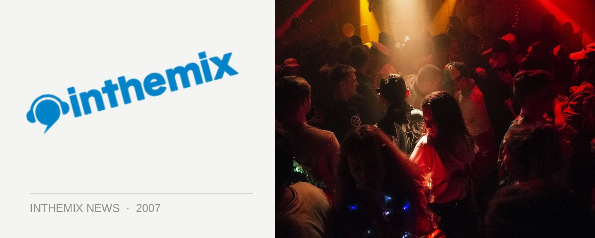

Robyn locked for sideshows
Australia has been treated to several heavy does of Swedish electro pop star Robyn this year: soon she’ll be back supporting Sneaky Sound System on their national tour, but it’s just been announced she’ll be playing two exclusive sideshows in Sydney and Melbourne. Signed on the ever-present Modular label in Australia, she’ll be supporting her recently released self titled album as well as her new single With Every Heartbeat.
Wanna find out more? Check out ITM’s face-to-face interview HERE and catch her at the below sideshows…
Thursday 15th November – Roxanne, Melbourne
Sunday 18th November – Oxford Art Factory, Sydney
And check out the clip for her new single With Every Heartbeat.